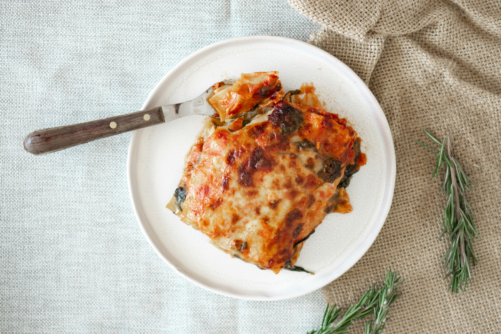

How to Make Lasagna

Lasagna ready to serve
Making lasagna can be time-consuming, but the results are well worth the wait. This page includes a detailed ingredient list and step-by-step instructions
Lasagna Ingredients
- Meat
- Onion and garlic
- Crushed tomatoes
- Tomato Sauce
- Tomato Paste
- Fresh Parsley
- Dried basil leaves
- Salt
- Italian Seasoning
- Fennel Seeds
- Black pepper
- Lasagna noodles
- Parmesan cheese
- Mozzarella cheese
- Ricotta cheese
- Egg
- Sugar
Steps
- Prepare the meat sauce
- Cook the noodles
- Make the ricotta mixture
- Layer the lasagna according to the recipe instructions.
- Cover with foil and bake
- Let the lasagna rest before serving
How to layer lasagna
- Meat Sauce
- Noodles
- Ricotta mixture
- Mozzarella slices
- Meat Sauce
- Parmesan cheese
- Repeat the layers then top with the remaining Parmesan
Home